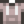

Geode
| Geode | |
| A blacksmith can break this open for you. | |
| Information | |
| Source | Mining • Fishing • Duggy (25%) |
| Sell Price | |
The Geode is a Mineral deposit that contains minerals, artifacts, ores, or basic resources. It can be obtained from breaking rocks above ground in Stardew Valley and in the Mines (especially floors 1-39), or dropped by Duggies. It may also be found in Fishing Treasure Chests, in the Garbage Can outside the Museum or received as a gift at the Feast of the Winter Star. A Stonefish Fish Pond may produce 1 or 5 Geodes when its population reaches 9. Geodes can also be obtained by pickaxing Geode Nodes. 2-4 Geodes may occasionally be found in Supply Crates on the Beach Farm if the player has not upgraded the Farmhouse yet. Geodes cannot be obtained from breaking rocks on Spring 1 of Year 1.[1]
The geode can be broken open by Clint in the Blacksmith shop for  25g or by using a Geode Crusher.
25g or by using a Geode Crusher.
Neither daily luck nor luck buffs affect the contents of a Geode.
Geode Contents
Artifacts
| Image | Name | Probability |
|---|---|---|
| Dwarvish Helm | 1/32 |
Foraged Minerals
| Image | Name | Probability |
|---|---|---|
| Earth Crystal | 1/16 |
Geode Minerals
All Geode Minerals have a 1/32 chance to appear.
| Image | Name |
|---|---|
| Alamite | |
| Calcite | |
| Celestine | |
| Granite | |
| Jagoite | |
| Jamborite | |
| Limestone | |
| Malachite | |
| Mudstone | |
| Nekoite | |
| Orpiment | |
| Petrified Slime | |
| Sandstone | |
| Slate | |
| Thunder Egg |
Resources
Note that obtaining Iron Ore from a Geode is only possible after reaching level 26 of The Mines. Before reaching level 26, a geode that would give iron ore will instead give copper ore. Except for clay and stone, the following items will be obtained in the following amounts: 30% for 1, 30% for 3, 30% for 5, 9% for 10, and 1% for 20. Stone has a 50% chance to use those values and a 50% chance to give only 1. Only 1 clay can be obtained from a single geode.
| Image | Name | Probability |
|---|---|---|
| Stone | 1/8 | |
| Clay | 1/16 | |
| Coal | 1/12 | |
| Copper Ore | 1/12 | |
| Iron Ore | 1/12 |
Gifting
| Villager Reactions
| |
|---|---|
| Dislike | |
Tailoring
Geode is used in the spool of the Sewing Machine to create the Gray Hoodie. 
Quests
- Two Geodes may be requested by Sunfish in a Fish Pond quest to increase the capacity of the pond from 3 to 5.
- Five Geodes may be requested by Stonefish in a Fish Pond quest to increase the capacity of the pond from 5 to 7.
- Eight Geodes may be requested by the Raccoon at the Giant Stump as part of his fifth request, or as part of any request starting with the sixth.
References
- ↑ See GameLocation::OnStoneDestroyed in the game code.
External Links
Users with access to their saved game files may find the "Stardew Predictor" utility helpful for predicting which items will be produced from breaking open geodes. The utility is located at: https://mouseypounds.github.io/stardew-predictor/
History
- 1.4: Can now be used in Tailoring. Can be requested in Fish Pond quests. Can be produced by Fish Ponds.
- 1.5: Can now be found in Supply Crates on the Beach Farm.
- 1.6: May now be requested by the Raccoon. No longer obtainable from mining meteorites.
| Minerals | |
|---|---|
| Foraged Minerals | Earth Crystal • Fire Quartz • Frozen Tear • Quartz |
| Gems | Amethyst • Aquamarine • Diamond • Emerald • Jade • Prismatic Shard • Ruby • Topaz |
| Geode Minerals | Aerinite • Alamite • Baryte • Basalt • Bixite • Calcite • Celestine • Dolomite • Esperite • Fairy Stone • Fire Opal • Fluorapatite • Geminite • Ghost Crystal • Granite • Helvite • Hematite • Jagoite • Jamborite • Jasper • Kyanite • Lemon Stone • Limestone • Lunarite • Malachite • Marble • Mudstone • Nekoite • Neptunite • Obsidian • Ocean Stone • Opal • Orpiment • Petrified Slime • Pyrite • Sandstone • Slate • Soapstone • Star Shards • Thunder Egg • Tigerseye |
| Geodes | Geode • Frozen Geode • Magma Geode • Omni Geode |